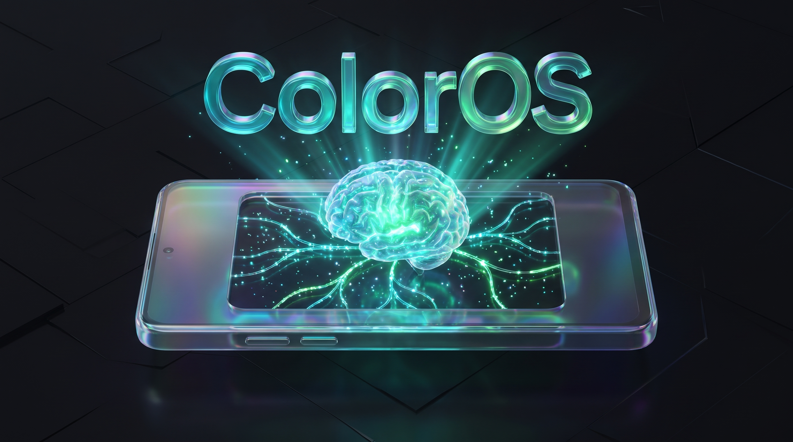
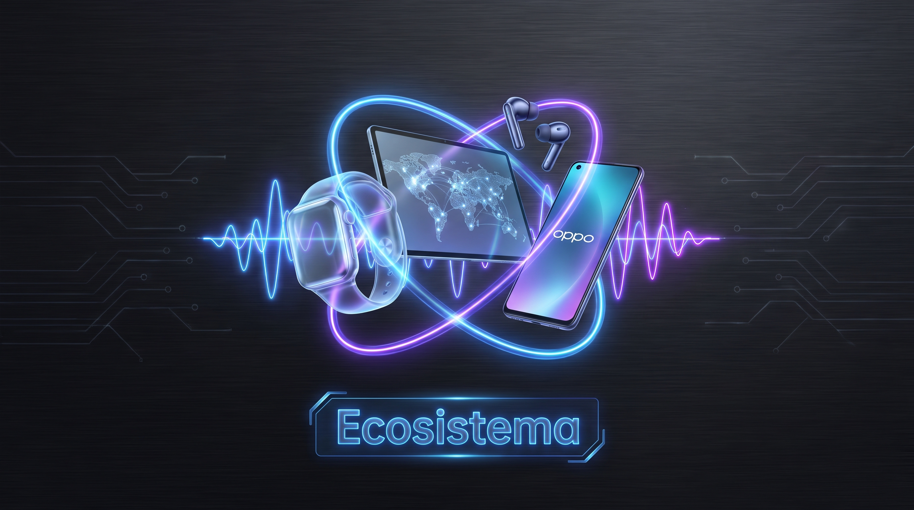

Inteligencia & Fluidez
ColorOS & Ecosistema
Descubre las herramientas inteligentes de OPPO AI, la fluidez del Trinity Engine y la interconexión con iPhone, Mac y accesorios inteligentes.
OPPO AI Suite
Productividad, Edición & Traducción
Herramientas Nativas
Inteligencia Artificial
Aprende a demostrar en piso: Mind Space, Mind Pilot, Borrador AI, Resumen de Llamadas y Traductor de Pantalla en tiempo real.
Mind Space
Mind Pilot
Traductor
Explorar Módulo OPPO AI

Interconexión Total
Dispositivos & Accesorios
Ecosistema & IoT
O+ Connect para transferir archivos con iPhone/Mac, llamadas sin red con BeaconLink, OPPO Bubble, audífonos Enco y smartwatches.
O+ Connect
BeaconLink
OPPO Bubble
Explorar Ecosistema